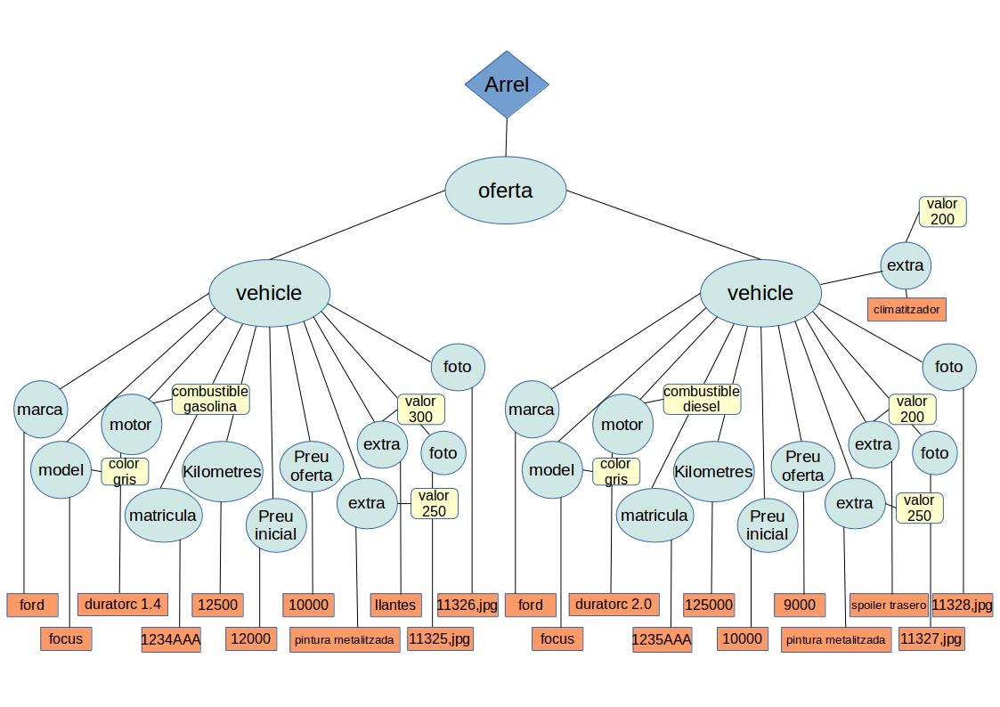
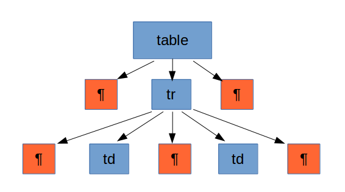

4.- Documents XML
Hem vist que la manera més còmoda de guardar objectes és amb la seriació, per mig del ObjectInputStream i ObjectOutputStream , però que fora de Java o de Kotlin no és possible l'accés a aquestes dades. I com havíem comentat en l'última nota de la pregunta anterior, també dins de Kotlin podem tenir problemes, perquè el nom de la classe amb el nom del paquet es guarda en el fitxer com a metades, i en un altre programa haurem de tenir la classe creada en un paquet amb el mateix nom, sinó no es podran recuperar les dades. I fins i tot dient-se exactament igual, poden haver problemes si el serialVersionUID de la classe no és el mateix.
També hem vist que per a guardar dades individuals de diferents tipus ens van molt bé les classes DataInputStream i DataOutputStream , però haurem de saber molt bé l'ordre i tipus de dades que estan guardades, sinó, no les podrem recuperar.
I no entrem ja en la possibilitat que diferents Sistemes Operatius representen la informació de forma diferent (per exemple, hi ha Sistemes Operatius que representen els números amb BCD i altres que utilitzen complement a 2).
Per tant, quan vulguem guardar dades que puguen ser llegides per aplicacions fetes en diferents llenguatges i/o executades en diferents plataformes, ens farà falta un format estàndar que tots el puguen entendre i reconéixer, i millor si és autoexplicatiu com és el cas dels llenguatges de marques.
El llenguatge de marques més conegut i més utilitzat és el XML (eXtensible Markup Language)
Els documents XML aconsegueixen estructurar la informació intercalant unes marques anomenades etiquetes, cada etiqueta amb un principi i un final, i que poden anar unes dins d'unes altres, i també contenir informació de text. D’aquesta manera, es podrà subdividir la informació estructurant-la de forma que puga ser fàcilment interpretada.
Tota la informació serà de text, i per tant no hi haurà el problema mencionat abans de representar les dades de diferent manera. Qualsevol dada, ja siga numèrica, booleana o com siga, es posarà en mode text, i per tant sempre es podrà llegir i interpretar correctament tota la informació continguda en un fitxer XML.
És cert que els caràcters es poden escriure utilitzant diferents sistemes de codificació, però XML ofereix diverses tècniques per evitar que això siga un problema, com per exemple, incloent a la capçalera del fitxer quina codificació s’ha fet servir en el moment de guardar-lo.
Amb les etiquetes, XML aconsegueix estructurar qualsevol tipus d’informació jeràrquica. Es pot establir certa similitud entre la forma com la informació es guarda en els objectes d’una aplicació i la forma com es guardaria en un document XML. La informació, en les aplicacions orientades a objectes, s’estructura, agrupa i jerarquitza en classes, i en els documents XML s’estructura, organitza i jerarquitza en etiquetes contingudes unes dins les altres i atributs de les etiquetes.

Imaginem que volem representar les dades dels empleats com els de l’aparat anterior utilitzant un format XML. No existeix una única solució, però és obligatori que totes respecten la jerarquia del model. Un possible format podria ser el següent:
<empresa>
<empleat>
<num>1</num>
<nom>Andreu</nom>
<departament>10</departament>
<edat>32</edat>
<sou>1000.0</sou>
</empleat>
<empleat>
<num>2</num>
<nom>Bernat</nom>
<departament>20</departament>
<edat>28</edat>
<sou>1200.0</sou>
</empleat>
<empleat>
<num>3</num>
<nom>Clàudia</nom>
<departament>10</departament>
<edat>26</edat>
<sou>1100.0</sou>
</empleat>
<empleat>
<num>4</num>
<nom>Damià</nom>
<departament>10</departament>
<edat>40</edat>
<sou>1500.0</sou>
</empleat>
</empresa>
Però aquesta també podria ser una manera de representar-lo:
<empresa>
<empleat num='1' nom='Andreu' departament='10' edat='32' sou='1000.0'/>
<empleat num='2' nom='Bernat' departament='20' edat='28' sou='1200.0'/>
<empleat num='3' nom='Clàudia' departament='10' edat='26' sou='1100.0'/>
<empleat num='4' nom='Damià' departament='10' edat='40' sou='1500.0'/>
</empresa>
I podem imaginar moltes altres solucions, combinant considerant com atributs o subetiquetes les diferents característiques dels empleats que volem guardar. Aquest seria el problema principal del XML, les múltiples solucions. Però també és veritat que totes elles són fàcils d'entendre.
4.1 - Parser o analitzador XML
Un Parser XML és una classe que ens permet analitzar i classificar el contingut d’un arxiu XML extraient la informació continguda en cada una de les etiquetes, i relacionar-la d’acord amb la seua posició dins la jerarquia.
Hi ha dos tipus d'analitzadors depenent de la manera de funcionar.
Analitzadors seqüencials
Els analitzadors seqüencials permeten extreure el contingut a mida que es van descobrint les etiquetes d’obertura i tancament. També s’anomenen analitzadors sintàctics. Són analitzadors molt ràpids, però presenten el problema que cada vegada que es necessita accedir a una part del contingut, s'ha de rellegir tot el document de dalt a baix.
En Java, l’analitzador sintàctic més popular s’anomena SAX , que vol dir Simple API for XML. És una analitzador molt utilitzat en diverses biblioteques de tractament de dades XML, però no sol utilitzar-se en aplicacions finals, pel problema abans comentat d'haver de llegir-se tot el document XML a cada consulta. Per aquesta raó no els veurem en aquest curs.
Analitzadors jeràrquics
Generalment, les aplicacions finals que han de treballar amb dades XML solen utilitzar analitzadors jeràrquics.
Els analitzadors jeràrquics guarden totes les dades del document XML en memòria dins una estructura jeràrquica, a mida que van analitzant el seu contingut. I per això són ideals per a aplicacions que requereixen una consulta contínua de les dades.
Elformat de l’estructura on es guarda la informació en memòria ha estat especificat per l’organisme internacional W3C (World Wide Web Consortium) i es coneix com a DOM (Document Object Model). És una estructura que HTML i javascript han popularitzat molt i es tracta d’una especificació que Java materialitza en forma d’interfícies. La principal s’anomena Document i representa tot un document XML. En tractar-se d’una interfície, pot ser implementada per diverses classes.
L’estàndard W3C defineix la classe DocumentBuilder (constructor de documents) per a poder crear estructures DOM a partir d’un XML. Aquesta classe DocumentBuilder és una classe abstracta, i per tal que es puga adaptar a les diferents plataformes, pot necessitar fonts de dades o requeriments diversos. Recordeu que les classes abstractes no es poden instanciar de forma directa. Per aquest motiu, el consorci W3 especifica també la classe DocumentBuilderFactory , és a dir, el fabricador de DocumentBuilder.
Les llibreries des d'on importarem les classes comentades són:
- DocumentBuilderFactory i DocumentBuilder les importarem de la llibreria javax.xml.parsers.*
- Document l'importarem de org.w3c.dom.*
Hem de cuidar sobretot aquesta última importació, perquè per defecte Java ens ofereix moltes llibreries des d'on importar Document. I si no la importem de la llibreria correcta, evidentment després tindrem errors.
Les instruccions necessàries per llegir un fitxer XML i crear un objecte Document serien les següents:
import java.io.FileInputStream
import javax.xml.parsers.DocumentBuilder
import javax.xml.parsers.DocumentBuilderFactory
import org.w3c.dom.Document
...
val dbFactory = DocumentBuilderFactory.newInstance()
val dBuilder = dbFactory.newDocumentBuilder()
val doc = dBuilder.parse(File(“fitxer.xml”))
Tornem a insistir en la necessitat d'importar Document de la llibreria org.w3c.dom.*
Anem a basar-nos en un exemple per poder veure a poc a poc la manera d'utilitzar el parser. És un exemple que possiblement es va veure en primer, en el mòdul de Llenguatge de Marques. Suposarem que està en el fitxer cotxes.xml , i que està en el directori del projecte on farem les proves.
<?xml version="1.0" encoding="UTF-8"?>
<oferta>
<vehiculo>
<marca>ford</marca>
<modelo color="gris">focus</modelo>
<motor combustible="gasolina">duratorc 1.4</motor>
<matricula>1234AAA</matricula>
<kilometros>12500</kilometros>
<precio_inicial>12000</precio_inicial>
<precio_oferta>10000</precio_oferta>
<extra valor="250">pintura metalizada</extra>
<extra valor="300">llantas</extra>
<foto>11325.jpg</foto>
<foto>11326.jpg</foto>
</vehiculo>
<vehiculo>
<marca>ford</marca>
<modelo color="gris">focus</modelo>
<motor combustible="diesel">duratorc 2.0</motor>
<matricula>1235AAA</matricula>
<kilometros>125000</kilometros>
<precio_inicial>10000</precio_inicial>
<precio_oferta>9000</precio_oferta>
<extra valor="250">pintura metalizada</extra>
<extra valor="200">spoiler trasero</extra>
<extra valor="500">climatizador</extra>
<foto>11327.jpg</foto>
<foto>11328.jpg</foto>
</vehiculo>
</oferta>
El primer que farem serà intentar connectar amb aquest fitxer, però d'una forma un poc més reduïda que abans, sense definir objectes del DocumentBuilderFactory ni DocumentBuilder. Tampoc ens caldrà definir- nos el File (FileInputStream) ja que el mètode parse també agafa un String com a paràmetre:
import javax.xml.parsers.DocumentBuilderFactory
import org.w3c.dom.Document
...
val doc = DocumentBuilderFactory.newInstance().newDocumentBuilder().parse("cotxes.xml")
Però, i si el procés que necessitem és l'invers? És a dir, i si el que volem és guardar una estructura DOM en un fitxer XML?
En aquest cas el que haurem de fer serà construir un document buit , anar posant els elements i atributs (amb els seus valors) d'alguna manera, i posteriorment guardar-lo en un fitxer. Deixem per a un poc més avant com anar construint els nodes del document i centrem-nos en el fet de crear el document buit i guardar-lo en un fitxer. Podem construir un document nou a partir del DocumentBuilder , utilitzant el mètode newDocument() :
import javax.xml.parsers.DocumentBuilderFactory
import org.w3c.dom.Document
...
val doc1 = DocumentBuilderFactory.newInstance().newDocumentBuilder().newDocument()
Per a escriure la informació continguda al DOM a un fitxer, es pot fer utilitzant una altra utilitat de Java anomenada Transformer. Es tracta d’una utilitat que permet realitzar fàcilment conversions entre diferents representacions d’informació jeràrquica. És capaç, per exemple, de passar la informació continguda en un objecte Document a un fitxer de text en format XML. També seria capaç de fer l’operació inversa, però no val la pena perquè el mateix DocumentBuilder ja s’encarrega d’això.
Transformer és també una classe abstracta i requereix d’una factory per poder ser instanciada. La classe Transformer pot treballar amb multitud de contenidors d’informació perquè en realitat treballa amb un parell de tipus adaptadors (classes que fan compatibles jerarquies diferents) que s’anomenen Source i Result. Les classes que implementen aquestes interfícies s’encarregaran de fer compatible un tipus de contenidor específic al requeriment de la classe Transformer. Així, disposem de les classes DOMSource , SAXSource o StreamSource com a adaptadors del contenidor de la font d’informació (DOM, SAX o Stream respectivament). DOMResult , SAXResult o StreamResult són els adaptadors equivalents del contenidor destí. A nosaltres ara, com que volem passar un document DOM a un fitxer, ens convindrà un DOMSource i un StreamResult
El codi bàsic per realitzar una transformació de DOM a fitxer de text XML seria el següent:
val trans = TransformerFactory.newInstance().newTransformer()
val source = DOMSource(doc)
val result = StreamResult(file)
trans.transform(source, result)
De tota manera, veurem més avant un exemple on ens guardarem una estructura DOM en un fitxer XML.
4.2 - L'estructura DOM
L’estructura DOM pren la forma d’un arbre, on cada part del XML es trobarà representada en forma de node. En funció de la posició en el document XML, parlarem de diferents tipus de nodes:
- El node principal que representa tot el XML sencer s’anomena Document.
- Les diverses etiquetes, inclosa l’etiqueta arrel, es coneixen com a nodes Element.
- El contingut d’una etiqueta de tipus text, serà un node de tipus TextElement
- Els atributs seran nodes de tipus Attribute.
En l'exemple de la pàgina anterior, el fitxer cotxes.xml , que té aquesta estructura:
<?xml version="1.0" encoding="UTF-8"?>
<oferta>
<vehiculo>
<marca>ford</marca>
<modelo color="gris">focus</modelo>
<motor combustible="gasolina">duratorc 1.4</motor>
<matricula>1234AAA</matricula>
<kilometros>12500</kilometros>
<precio_inicial>12000</precio_inicial>
<precio_oferta>10000</precio_oferta>
<extra valor="250">pintura metalizada</extra>
<extra valor="300">llantas</extra>
<foto>11325.jpg</foto>
<foto>11326.jpg</foto>
</vehiculo>
<vehiculo>
<marca>ford</marca>
<modelo color="gris">focus</modelo>
<motor combustible="diesel">duratorc 2.0</motor>
<matricula>1235AAA</matricula>
<kilometros>125000</kilometros>
<precio_inicial>10000</precio_inicial>
<precio_oferta>9000</precio_oferta>
<extra valor="250">pintura metalizada</extra>
<extra valor="200">spoiler trasero</extra>
<extra valor="500">climatizador</extra>
<foto>11327.jpg</foto>
<foto>11328.jpg</foto>
</vehiculo>
</oferta>
Veient-lo com una estructura jeràrquica ens quedaria així:

On:
- El node Document és el rombe
- Els nodes Element són els cercles
- Els nodes TextElement són els rectàngles de fons taronja.
- Els nodes Attribute són els rectàngles arrodonits de color groc
Cada node específic disposa de mètodes per accedir a les seues dades concretes (nom, valor, nodes fills, node pare, etc.). És a dir, que el node serveix per a situar-se en una determinada posició (element, atribut, element de text, ...). Tindrà uns mètodes, sobretot per a navegar, encara que també alguns per a traure el contingut. Element és un classe derivada de Node (per tant hereta tots els seus mètodes), i proporciona algunes coses més, sobretot per a accedir còmodament a les seues parts. Mirem els mètodes més importants, tant de Node com de Element i Document
Mètodes de NODE
| Valor tornat | Mètode | Descripció |
|---|---|---|
| String | getNodeName() | torna el nom d'aquest node |
| short | getNodeType() | torna el tipus d'aquest node (ELEMENT_NODE, ATTRIBUTE_NODE, TEXT_NODE, ... |
| String | getNodeValue() | torna el valor del node, si en té |
| NodeList | getChildNodes() | torna una llista amb els nodes fills |
| Node | getFirstChild() | torna el primer fill |
| Node | getLastChild() | torna l'últim fill |
| NamedNodeMap | getAttributes() | torna una llista amb els atributs del node (null si no en té cap) |
| Node | getParentNode() | torna el pare |
| String | getTextContent() | torna el text contingut en l'element i el de tots els seus descendents, si en té |
| boolean | hasChildNodes() | torna cert si el node té algun fill |
| boolean | hasAttributes() | torna cert si el node té algun atribut |
Mètodes d' ELEMENT
| Valor tornat | Mètode | Descripció |
|---|---|---|
| String | getAttribute( String nom) | torna el valor de l'atribut que té aquest nom |
| NodeList | getElementsByTagName( String nom) | torna una llista de nodes amb tots els descendents que tenen aquest nom |
| boolean | hasAttribute( String nom) | torna cert si l'element té aquest atribut |
Mètodes de DOCUMENT
| Valor tornat | Mètode | Descripció |
|---|---|---|
| Element | getDocumentElement() | torna l'element arrel del document |
| NodeList | getElementsByTagName( String nom) | torna una llista de nodes amb tots els descendents que tenen aquest nom |
Nota
Sempre que tinguem una llista de nodes, podrem accedir a cadascun dels membres de la llista amb el mètode item especificant el número d'ordre. Així, si volem accedir al primer posarem item(0)
Posterioment posarem els mètodes que serveixen per anar posant contingut a un document: crear fills, crear atributs, posar contingut, ...
El DOM resultant obtingut des d’un XML acaba sent un còpia exacta del fitxer, però disposat de diferent manera. Tant al XML com al DOM hi haurà informació no visible, com ara els retorns de carro , que cal tenir en compte per tal de saber processar correctament el contingut i evitar sorpreses poc comprensibles.
Per a il·lustrar el problema que poden suposar els retorn de carro, imaginem que disposem d’un document XML amb el següent contingut:
<table>
<tr>
<td> </td>
<td> </td>
</tr>
</table>
Veurem més clar si representem els retorn de carro en el mateix document:
<table>¶
<tr>¶
<td> </td>¶
<td> </td>¶
</tr>¶
</table>
A la següent figura es mostra la representació que tindria l’objecte DOM, un vegada estiga ja copiat en memòria. Observeu com l’element table tindrà tres fills. En un es guardarà el retorn de carro que situa l’etiqueta < tr > a la següent línia, en el segon trobarem l’etiqueta < tr >, i en el tercer el retorn de carro que fa que </ table > estiga en la línia de baix. El mateix passa amb els fills de < tr >, abans i després de cada node < td > trobarem un retorn de carro.

En canvi, si haguérem partit d'un XML equivalent però sense retorns de carro, el resultat hauria estat diferent:
<table><tr><td></td><td></td></tr></table>

L’absència de retorns de carro en el fitxer implica també l’absència de nodes contenint els retorns de carro en l’estructura DOM.
Un altre aspecte a tenir en compte és que el contingut de les etiquetes es plasma en el DOM com un node fill de l’etiqueta contenidora. És a dir, per obtenir el text d’una etiqueta cal obtenir el primer fill d’aquesta.
<aaa>
<bbb>
text de l'etiqueta bbb
</bbb>
</aaa>

4.2.1 Lectura
Anem a fer proves per poder comprovar el funcionament. Ens basem en el document cotxes.xml esmentat en la pregunta 4.1
Nota
Copieu el següent codi en un fitxer Kotlin anomenat Exemple_3_4_1_XMLMirar.kt
package exemples
import javax.xml.parsers.DocumentBuilderFactory
fun main(args: Array<String>){
val doc = DocumentBuilderFactory.newInstance().newDocumentBuilder().parse("cotxes.xml")
println(doc.getNodeName()) // torna el nom del document. No és l'element arrel. Ens dirà #document
val arrel = doc.getDocumentElement() // apuntarà a l'element arrel
println(arrel.getNodeName()) // torna el nom de l'element. Ens dirà oferta
println(arrel.getNodeValue()) // torna el valor de l'element. Com és un element que conté altres elements, el valor és null
}
Tal i com està documentat, aquesta serà l'eixida:
#document
oferta
null
Anem a comprovar ara que el primer fill de oferta no és vehiculo sinó el retorn de carro. Els element vehiculo són el segon i el quart (índex 1 i 3). Copieu el següent codi en un fitxer Kotlin anomenat Exemple_3_4_2_XMLMirar2.kt
package exemples
import javax.xml.parsers.DocumentBuilderFactory
fun main(args: Array<String>) {
val doc = DocumentBuilderFactory.newInstance().newDocumentBuilder().parse("cotxes.xml")
val arrel = doc.getDocumentElement() // apuntarà a l'element arrel
val fills = arrel.getChildNodes()
println(fills.item(0).getNodeName()) // el primer fill és el retorn de carro; ens dirà que és de text
println(fills.item(1).getNodeName()) // el segon fill sí que és vehiculo
println(fills.item(2).getNodeName()) // el tercer fill és el retorn de carro; ens dirà que és de text
println(fills.item(3).getNodeName()) // el quart fill sí que és vehiculo
println(fills.item(4).getNodeName()) // el cinquè fill és el retorn de carro; ens dirà que és de text
println(fills.item(5).getNodeName()) // no existeix el sisè fill. Donarà error
}
Observeu que en l'última sentència estem provocant un error:
#text
vehiculo
#text
vehiculo
#text
Exception in thread "main" java.lang.NullPointerException
at exemples.Exemple_4_2_MirarXML2.main(Exemple_4_2_MirarXML2.kt:15)
Per tant, hem d'anar molt en compte amb els retorns de carro.
-
Per a poder esquivar els retorn de carro podríem mirar el tipus de cada node ( getNodeType() ), menysprear els els de tipus TEXT_NODE i considerar només els de tipus ELEMENT_NODE.
-
Però normalment l'accés que farem serà un poc més directe i més fàcil. Agafarem la llista de tots els element que tinguen un determinat nom amb getElementsByTagName(nom). Evidentment en la llista no estaran els retorns de carro i així no tindrem problemes amb ells.
En el següent exemple recorrerem tots els element vehiculo. De cadascun agafarem el contingut dels elements marca i matricula. També agafem el contingut de l'atribut combustible de l'element motor. Guardeu el següent codi en un fitxer Kotlin anomenat Exemple_3_4_3_XMLMirarCotxes.kt :
package exemples
import javax.xml.parsers.DocumentBuilderFactory
import org.w3c.dom.Element
fun main(args: Array<String>) {
val doc = DocumentBuilderFactory.newInstance().newDocumentBuilder().parse("cotxes.xml")
val arrel = doc.getDocumentElement() // apuntarà a l'element arrel
val llista = arrel.getElementsByTagName("vehiculo")
for (i in 0 until llista.getLength()) {
val el = llista.item(i) as Element
println(el.getNodeName() + " " + (i + 1))
println("Marca: " + el.getElementsByTagName("marca").item(0).getChildNodes().item(0).getNodeValue())
println("Matrícula: " + el.getElementsByTagName("matricula").item(0).getFirstChild().getNodeValue())
println("Motor: " + el.getElementsByTagName("motor").item(0).getTextContent())
println("Combustible: " + el.getElementsByTagName("motor").item(0).getAttributes().item(0).getNodeValue())
val m = el . getElementsByTagName ("motor").item(0) as Element
println("Combustible: " + m.getAttribute("combustible"))
println()
}
println(arrel.getTextContent())
}
És molt important observar que quan tenim un element que ja té contingut, la informació no és accessible, sinó que hem d'anar al primer fill, que aquest ja és de tips TEXT_NODE , per agafar el seu valor.
En l'exemple:
- Per a marca hem agafat de tota la llista de fills el primer, per traure el seu valor.
- En matricula en compte d'agafar tota la llista de fills, només hem agafat el primer, i per tant és més ràpid.
- I per a motor utilitzem el mètode getTextContent , que agafa el congingut de text de l'element i de tots els seus descendents. Com és un node de text ja sabem a priori que ens anirà bé, i per tant és la forma més ràpida.
L'atribut combustible de l'element motor l'hem tret de 2 maneres:
- La primera agafant la llista d'atributs, i després el primer d'aquesta llista.
- En la segona manera s'ha fet més elegant, anat a buscar la propietat en qüestió. Per això hem convertit el node en l'element m , per a poder utilitzar getAttribute.
Al final fem el getTextContent() sobre l'arrel per a comprovar que trau el seu contingut i el de tots els seus fills, per això apareix la informació duplicada
Aquest serà el resultat de l'exemple anterior:
vehiculo 1
Marca: ford
Matrícula: 1234AAA
Motor: duratorc 1.4
Combustible: gasolina
Combustible: gasolina
vehiculo 2
Marca: ford
Matrícula: 1235AAA
Motor: duratorc 2.0
Combustible: diesel
Combustible: diesel
ford
focus
duratorc 1.4
1234AAA
12500
12000
10000
pintura metalizada
llantas
11325.jpg
11326.jpg
ford
focus
duratorc 2.0
1235AAA
125000
10000
9000
pintura metalizada
spoiler trasero
climatizador
11327.jpg
11328.jpg
4.2.2 Escriptura
Anem ara a crear un nou document XML i a guardar-lo en un fitxer. Utilitzarem com a exemple Empleats. Al final de tot convertirem el fitxer Empleats.obj , generat en la pregunta 3, en el fitxer Empleats.xml.
La primera consideració a fer és que partirem d'un document buit. Anirem construint els elements i posant els atributs, i quan tinguem un element creat del tot, l'afegirem a l'estructura, és a dir farem que siga el fill d'un que ja està en l'estructura. Podríem fer-ho també al revés, és a dir, primer penjar-lo de l'estructura i després anar omplint-lo.
Els principals mètodes per anar construint l'estructura són:
Mètodes de DOCUMENT
| Valor tornat | Mètode | Descripció |
|---|---|---|
| Element | createElement( String nom) | crea un nou element amb el nom indicat (s'haurà de penjar en l'estructura) |
| Text | createTextNode( String dades) | crea un nou element de text (amb contingut) |
| Node | appendChild( Node nou) | afegeix el node nou, que serà l'arrel |
Mètodes de NODE
| Valor tornat | Mètode | Descripció |
|---|---|---|
| Node | appendChild( Node nou) | afegeix el node nou com a l'últim fill fins el moment |
| void | removeChild( Node vell) | lleva el node vell com a fill |
Mètodes de ELEMENT
| Valor tornat | Mètode | Descripció |
|---|---|---|
| void | setAttribute( String nom,String valor) | afegeix un nou atribut a l'element, amb el nom i valor indicats |
| void | removeAttribute( String nom) | lleva l'atribut de l'element |
| void | setTextContent( String dades) | afegeix un fill que serà de text, amb el contingut passat com a paràmetre |
Anem a fer directament ja l'exemple dels empleats. Totes les dades seran elements, excepte el número d'empleat, que farem que siga un atribut d'empleat per a practicar. A l'element arrel li direm empleats. El resultat ha de ser el fitxer Empleats.xml. Copieu el següent codi en el fitxer Kotlin Exemple_3_4_4_XMLCrearEmpleats.kt :
import java.io.ObjectInputStream
import java.io.FileInputStream
import javax.xml.parsers.DocumentBuilderFactory
import java.io.EOFException
import javax.xml.transform.TransformerFactory
import javax.xml.transform.dom.DOMSource
import javax.xml.transform.stream.StreamResult
import javax.xml.transform.OutputKeys
fun main(args: Array<String>) {
val f = ObjectInputStream(FileInputStream ("Empleats.obj"))
val doc = DocumentBuilderFactory.newInstance ().newDocumentBuilder().newDocument()
val arrel = doc.createElement ("empleats")
doc.appendChild(arrel)
try {
while (true) {
val e = f.readObject () as Empleat
val emp = doc.createElement ("empleat")
emp.setAttribute("numero", Integer.toString(e.num))
val nom = doc.createElement ("nom")
nom.appendChild(doc.createTextNode(e.nom)) // forma llarga: afegim un fill que és un node de text
emp.appendChild(nom)
val dep = doc.createElement("departament")
dep.setTextContent(e.departament.toString()) // forma curta: amb setTextContent() li posem contingut
emp.appendChild(dep)
val edat = doc.createElement("edat")
edat.setTextContent(e.edat.toString())
emp.appendChild(edat)
val sou = doc.createElement("sou");
sou.setTextContent(e.sou.toString())
emp.appendChild(sou)
arrel.appendChild(emp)
}
} catch (eof: EOFException) {
f.close();
}
val trans = TransformerFactory.newInstance().newTransformer()
trans.transform(DOMSource(doc), StreamResult("Empleats.xml"))
}
En el fitxer XML generat, observareu que no hi ha retorns de carro, tot està en una mateixa línia. Si voleu veure'l bé, el podeu obrir per exemple amb un navegador web, que interpreta bé el format XML.
Però també podem crear el fitxer donant-li un aspecte agradable incorporant aquestes dues línies immediatament abans de crear el fitxer, és a dir, immediatament abans de la línia 49:
trans.setOutputProperty(OutputKeys.INDENT, "yes")
trans.setOutputProperty("{http://xml.apache.org/xslt}indent-amount", "2")
I el fitxer quedarà així:
<?xml version="1.0" encoding="UTF-8" standalone="no"?>
<empleats>
<empleat numero="1">
<nom>Andreu</nom>
<departament>10</departament>
<edat>32</edat>
<sou>1000.0</sou>
</empleat>
<empleat numero="2">
<nom>Bernat</nom>
<departament>20</departament>
<edat>28</edat>
<sou>1200.0</sou>
</empleat>
<empleat numero="3">
<nom>Clàudia</nom>
<departament>10</departament>
<edat>26</edat>
<sou>1100.0</sou>
</empleat>
<empleat numero="4">
<nom>Damià</nom>
<departament>10</departament>
<edat>40</edat>
<sou>1500.0</sou>
</empleat>
</empleats>
Llicenciat sota la Llicència Creative Commons Reconeixement NoComercial CompartirIgual 2.5